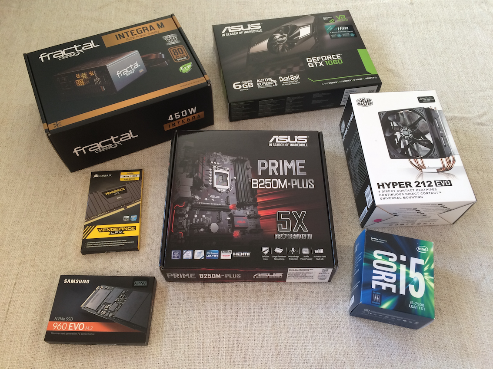

Building a modest Linux Deep Learning machine
Posted by Jordi Warmenhoven in Blog
Some time ago I decided to move from a MacOS development environment back to Linux for exploring and working with Python datascience and statistical modelling libraries. Though most of the Python libraries and platforms offer support for MacOS, things are generally easier in Linux. One avoids a lot of special installation and compatability instructions. My first experience with Linux dates from 1996 when I bought a set of Slackware cdroms. Since then I have used Linux on various types of hardware, but not that much during the last few years. I mainly use Jupyter Notebooks, which are accessed through a webbrowser. So I will just run the Linux machine as a server and work in the notebooks through from my MacOS desktop using a browser. I find the Jupyter notebook a helpful tool, but here are some valid points on its downsides.
A second reason for wanting to switch back to Linux has to do with the fact that I want to take a look at running deep learning models on a Graphics Processing Unit (GPU). My MacOS desktop (iMac) does not have compatible hardware or the possibility of installing such hardware. Today, the GPU's and toolkits from Nvidia are most common and deep learning frameworks like TensorFlow and Theano support mainly those. I must admit that the GPU was not a strict requirement for the new hardware: I am currently interested in probabilistic programming in PyMC3 and those type of models generally do not benefit from running on a GPU. Using the CPU for the computations is often faster! But since i wanted to take a look at Keras/Tensorflow I opted for a GPU anyway, making it the most expensive hardware component in my build...
Below are some details on the hardware and the base installation of the Python libraries. It assumes basic knowledge of hardware components, Linux, Python and Deep Learning frameworks.
Hardware
My objective was not to build a high-end Deep Learning machine with multiple GPU's of the newest hardware available. I wanted to have a reasonably compact and average machine in terms of performance and cost. Checking component compatibility and reviews with help of pcpartpicker was very convenient. The actual installation of the hardware was not very difficult. Carefully read the manual of the motherboard and case. Those will pretty much show you in which order to put things together.

-
Motherboard: ASUS Prime B250M-Plus
This motherboard has a B250 chipset with support for 6th/7th generation Skylake/Kaby Lake Intel Core processors. Initially I went for the B250M-K which has one slot for GPU instead of two and two slots for RAM instead of four. This would have been fine since I do not intend on running multiple GPU's or upgrade to more RAM. But as it turned out, the B250M-K is not compatible with the case I had bought: it has only one connector for a case fan whereas my case came with two fans. I really liked the case so I decided to change the motherboard since the extra cost was small. -
CPU: Intel Core i5 7500 3.4 GHz
A 7th generation Kaby Lake processor with 4 cores from Q1 2017. -
CPU Cooler: Cooler Master Hyper 212 EVO
The Intel CPU came with a fan but I bought this one afterwards. Mostly to reduce the noise somewhat. I do not think there would have been any problems with the Intel stock cooler since I am not going to overclock the CPU. -
Video Card: ASUS GeForce GTX 1060 6GB Phoenix
Not the newest and most capable GPU on the market, but enough for what I intend to use it for. -
Memory: Corsair 16GB (2x 8GB) DDR4 2400MHz CL16 Vengeance
The Motherboard supports a maximum of 64GB DDR4 @ 2400 MHz. It required a BIOS update for the motherboard to run the RAM at 2400MHz. -
Storage: Samsung 960 EVO 250GB
I wanted a SSD disk as the main storage disk. -
Case: Fractal Design Define Mini C Svart
Nice, compact mATX case. High quality finish and good manual. -
Power Supply: Fractal Design Integra M 450W
All the components together do not draw that much power at all. This modest 450 Watt power supply works just fine.
The total price tag for the components was a little more than 1100 USD.
Software
Instead of just copying the installation instructions of the various libraries here, I will just mentioned specific points which I think are especially important. You should read all notes in the context of "At the time of installation". Available versions and dependencies have likely changed since then.
-
Ubuntu 16.04 LTS
I chose the 16.04 release over the more recent 18.04 because the latter is not explicitly mentioned as being compatible with the Nvidia Cuda Toolkit. Judging from various posts on the Internet there are ways to get it to work in 18.04, but I did not want to take any chances. I installed Ubuntu by means of a boot image on a USB memory stick. -
Nvidia CUDA Toolkit 9.0
"The NVIDIA® CUDA® Toolkit provides a development environment for creating high performance GPU-accelerated applications. With the CUDA Toolkit, you can develop, optimize and deploy your applications on GPU-accelerated embedded systems, desktop workstations, enterprise data centers, cloud-based platforms and HPC supercomputers."
TensorFlow with GPU support in Ubuntu requires CUDA Toolkit 9.0. After carefully following the installation and post-installation instructions, I did not encounter any problems with the Ubuntu deb packages. To make sure that my package manager does automatically upgrade to a never version of the toolkit I installed withsudo apt-get install cuda-9.0instead ofsudo apt-get install cuda. -
Nvidia cuDNN 7.1.4 for CUDA 9.0
"The NVIDIA CUDA® Deep Neural Network library (cuDNN) is a GPU-accelerated library of primitives for deep neural networks. cuDNN provides highly tuned implementations for standard routines such as forward and backward convolution, pooling, normalization, and activation layers. cuDNN is part of the NVIDIA Deep Learning SDK."
I installed the deb packages as described in the documentation. You will have to register (free) as a developer to be able to download the library. -
Anaconda 5.2 (Python 3.6)
I created a conda environment with Python version 3.6 and installed the typical PyData libraries like Pandas, Numpy, Scipy, Matplotlib and Jupyter. -
Theano 1.0.2
Bleeding-Edge installation as described in the documentation:pip installfrom GitHub. I did this within the conda environment. The Ubuntu installation instructions appear a bit dated with regards to the required versions of the dependent libraries. Just install the libraries mentioned usingconda install [library]. I installed libgpuarray following the step-by-step system install description (notecmakerequirement).
Read the documentation about the configuration of Theano using the.theanorcfile. -
PyMC3 3.5
PyMC3 is a Python package for Bayesian modelling and relies on Theano for computations. I installed the development branch withpip installfrom GitHub within the conda environment. When testing some code to see if I could use the GPU with Theano, I found out that PyMC3 tries to do parallel MCMC sampling by default. It assumes that you have multiple GPU's and this will result in a RuntimeError. Specifycores=1when calling thepm.sample()method. If you have configured Theano to use the CPU instead of the GPU (device = cpuin your.theanorcfile), you can enter the number of cores of your cpu. As mentioned earlier, the GPU does generally not speed up computations with PyMC3 models. -
TensorFlow 1.9
Installed in the conda environment using pip and the URL of the TensorFlow package with GPU support for Python 3.6. -
Keras 2.2.2
Installed in the conda environment using pip. It will use TensorFlow as its backend.
There are of course more base packages and libraries that one would install in a typical development environment, but the above are the main parts with regards to Deep Learning and Bayesian modelling. Furthermore, the modelling and Deep Learning ecosystem for Python is developping fast. Many more frameworks are available. I am looking forward to exploring these!
Comments